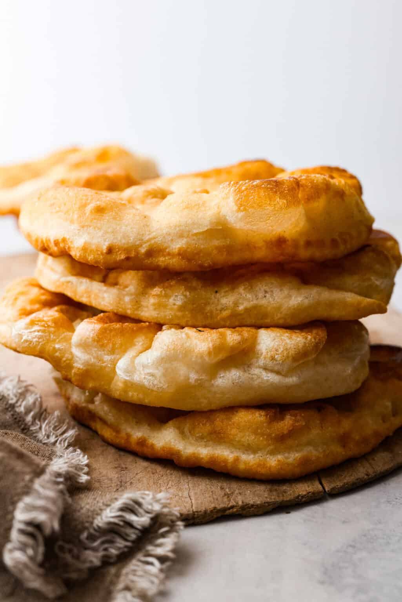

Fry Bread Recipe

Description
Grab those ingredients and let's make some tasty homemade bread! Even
though the bread is fried in oil, don't let that intimidate you. The
process is super straightforward and you’ll end up with light, fluffy
bread each and every time!
Ingredients
- All-Purpose Flour: This is your go-to dough maker. It's the main
ingredient that gives fry bread its structure and chewy goodness
- Baking Powder: Makes your fry bread all fluffy and light, like a
delicious cloud
- Salt: The flavor booster! Salt adds that extra oomph to your fry
bread and keeps it from tasting bland. Even if you're going to use
sweet toppings, don't skip the pinch of salt
- Hot Water: Turns the ingredients into a smooth dough
- Vegetable Oil for Frying: This oil is what turns your fry bread
dough into crispy, golden deliciousness
Steps
- Dry Ingredients: In the bowl of a stand mixer add the flour,
baking powder, and salt. Then whisk by hand to combine
- Add Water: Pour half the water into the bowl and using a dough hook,
mix the dough on medium speed, gradually add more of the water until
all the water has been added
- Rest: Once everything has come together and the dough is smooth,
remove it from the mixing bowl and place in a lightly oiled bowl.
Cover and let the dough rest 45 minutes to an hour
- Shape: When the dough has rested, divide it all into 2 inch rounds.
Place the rounds on a floured surface and roll them all out about 1/8
to 1/4 inch thick. You can either roll them with a rolling pin or
flatten and stretch them using your hands
- Fry: Add the vegetable oil to a skillet and heat it up over medium high
heat. When the oil is ready, begin frying the frybread one bread at a
time by carefully placing them in the oil, frying for 2-3 minutes per
side
- Remove Excess Oil: The bread should puff up and be a golden brown color.
When they are done, remove them from the oil and place them on a paper towel-
lined plate to soak up any excess oil
- Enjoy: Allow them to rest a little before serving